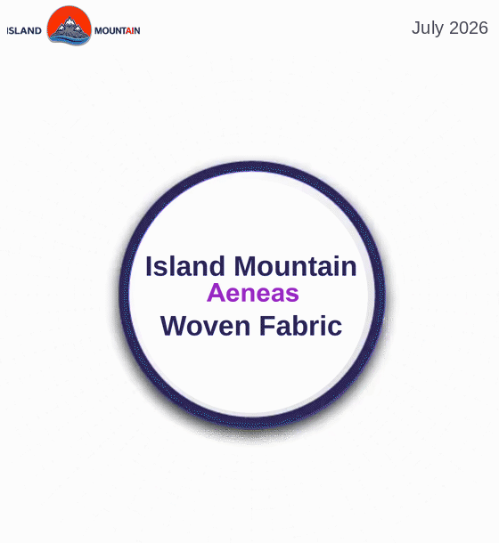
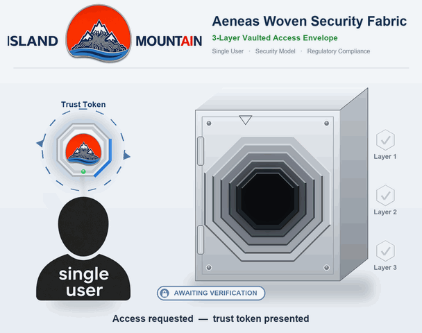
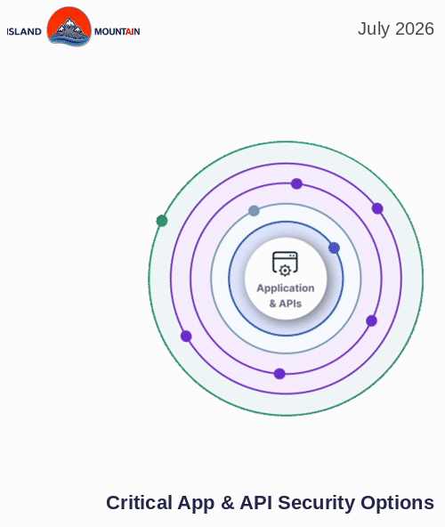

Woven security and governance, from the cloud or fully air-gapped.
Secure and govern from the cloud, or from inside an air-gapped boundary.Cloud visibility, compliance evidence, approval-gated remediation.No standing privilege. No context leaves your custody.
Cloud-Side or Air-GappedZero Standing PrivilegeAudit-FirstWSF Built-In
A security and governance fabric built for environments that cannot leak context.
Lamprey is designed for teams that need cloud visibility, compliance reporting, and remediation control without handing persistent access or scan data to a third party. Run it outside your organization through the cloud, or inside an air-gapped boundary; either way it gives operators enough context to prioritize real exposure while keeping deployment details, evidence, and credentials in your custody.

Cloud visibility and classification, woven into the operation and kept inside your boundary.
Capabilities
Woven into every action.

Cloud-Side Or Air-Gapped
Deploy the fabric outside your organization through the cloud, or inside as an air-gapped install. Findings, samples, credentials, and audit trails stay inside your boundary, aligned to your existing security and governance model.

Ephemeral Credential Lifecycle
Use short-lived credentials for discovery and scoped write access only after approval, reducing the blast radius of both mistakes and compromise.
Hub And Gateway Architecture
Run lightweight gateways near the resources they inspect while centralizing evidence, status, and workflow where operators can act on it.

Audit-First Operations
Preserve who requested, approved, and executed each sensitive action so remediation can be reviewed as an operational control, not a black box.
Multi-Cloud, Scoped, And Self-Hosted
Covers AWS, Azure, GCP, Kubernetes, and databases. Runs inside the customer environment with no scan-data SaaS. Access stays scoped through ephemeral credentials and audited approvals.
Cloud Posture Scanning
Build a current view of cloud assets, configuration drift, identity exposure, and workload posture across the environments a security team already operates.
Security Model
Least privilege is a product constraint, not a dashboard label.
We design around zero standing privilege: scan access is minted just in time, scoped to the operation, and revoked automatically. Remediation remains approval-gated and auditable. The fabric is intentionally structured for environments where a scanner must earn each action instead of accumulating broad permanent trust.

Zero standing privilege: access is minted just in time, scoped to the operation, and revoked automatically.
Compliance & Operations
Evidence you can hand to an auditor.

DSPM And Classification
Identify sensitive data patterns, exposed storage paths, and access-control gaps without turning samples and findings into another external data exhaust.
Compliance Evidence
Connect technical findings to control families, preserve audit-ready context, and make posture work easier to explain to compliance and leadership teams.

Remediation Workflow
Translate findings into reviewable plans, require human approval before sensitive changes, and retain the trail needed to prove what happened.

Enterprise DataSec Teams
Operating multi-cloud visibility, prioritization, and remediation with local custody.

Evidence & Control Mapping
Evidence collection aligned to control mapping, reporting, and repeatable review workflows within existing compliance program architectures.
Managed Security Providers
Gateway-based scanning for isolated customer environments where access boundaries aren't mere formality.
Deployment
Built for controlled infrastructure, inside or out.
Lamprey runs two ways: outside your organization through the cloud, or inside as an air-gapped deployment. Island Mountain supports environments where regulatory, contractual, or operational pressure requires direct control of telemetry, secrets, network paths, and audit records. The goal is to fit security work into constrained environments without forcing teams to choose between useful automation and responsible custody.
We build & deploy woven security and governance fabrics with in-house operating systems for organizations that need actionable security posture data, not another permanently privileged SaaS integration. The current scope of work is centered on security and governance automation that stays 100% accountable to the teams that operate it.

Woven security services and on-site hardware, fit to environments that require direct custody.
Orchestration flows down through runtime and tools into the Woven Security & Governance Fabric, where identity, guardrails, approval gates and the audit ledger sit inline on every call. Attacks ride the same rails; the fabric is where they stop.
Task & data flow Attack path - stopped at the fabric Telemetry & audit, flowing back up Control impact point
Who We Serve
Woven security services, on-site hardware deployment, and organizational training.
We comprehensively plan and professionally facilitate deployments where regulatory, contractual, or operational pressure requires direct control of telemetry, secrets, network paths, and audit records. Our goal is to fit security work into constrained environments without forcing teams to choose between useful automation and responsible custody.
An animated five-layer map of how AI agents plan, delegate, and act, and how they get attacked. Orchestration patterns, tool trust boundaries, agentjacking, the lethal trifecta, and the deterministic controls that break each attack.
A single fake Sentry error report hijacked the AI coding agent inside a $250 billion Fortune 100 company and more than 100 other organizations. No breach, no stolen credentials. Air-gapped hardware closes the cloud exfiltration category. It does not close an agent that can't tell trusted data from an instruction.
Put your phone in airplane mode and the LLM keeps running. Apple, Google, memristors, and quantized MoE models are collapsing the distance between inference and the device in your pocket. The same sovereignty argument Island Mountain makes at rack scale, now at pocket scale.
On June 3, 2026, the EU published the Cloud and AI Development Act, defining four sovereignty tiers for AI infrastructure. The highest tier blocks any provider subject to the U.S. CLOUD Act. Here is what that framework reveals about every regulated industry in America.
Over 100 hyperscale data center projects proposed on tribal lands. The Seminole Nation voted 24-0 for a moratorium. The Muscogee Nation rejected a facility on food sovereignty land. The question every tribe needs to answer: landlord or owner?
A 100-person company burning $50,000 a month on Claude tokens can replace that spend with on-premises RTX PRO 6000 Blackwell hardware. Break-even in under two months. Five-year savings exceeding $3.5 million. Here is the math.
NERC Level 3 alerts, data centers draining aquifers, and 399 billion gallons of water consumed annually. Local AI inference is the responsible path forward for organizations that refuse to subsidize the cloud.
A developer ran Qwen3.6-35B on a MacBook Pro and documented every limitation honestly. Speed, context depth, quality variance. Dedicated RTX PRO 6000 Blackwell GPU inference hardware solves each one today.
The CEO of Hugging Face ran a 27B model on a laptop in airplane mode and called it the second revolution of AI. For regulated industries paying per-token fees to process sensitive data on someone else's servers, this revolution has been a long time coming.